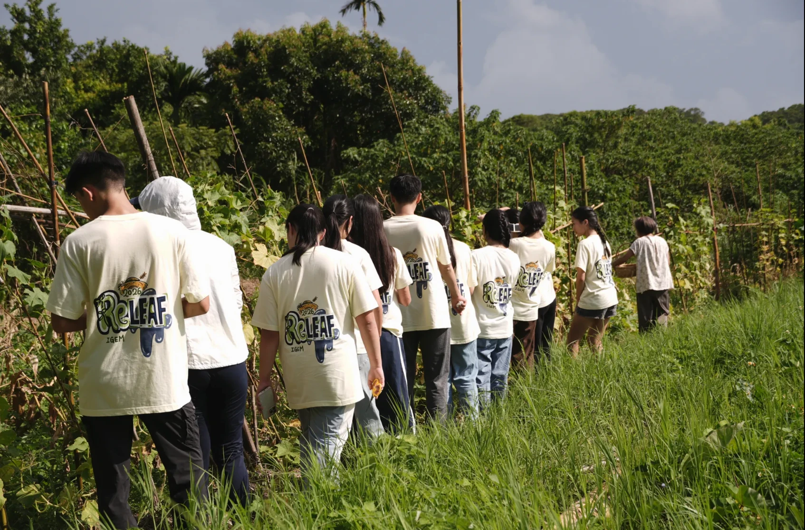

Homepage diptych
On the left, the team walking in a line behind Farmer Chen into her field. On the right, a shot we take next week in the classroom, with the bioreactor fully assembled. This page takes the left photo's perspective apart, works out how the right one has to be staged and shot, and then puts several ways of joining them side by side. The right half is a drawing for now; it gets swapped for the real photo once we have it.
Reading the left photo
Lines measured on the photo. Yellow is perspective: the line through the tops of the heads and the line through the shirt hems both run off to the right and meet outside the frame.
- One line of people walking away to the right
- The whole photo has a single perspective direction. Heads, shoulders, hems and feet all converge on one point, so the eye walks down the line on its own and lands on Farmer Chen.
- The horizon is at chest height
- The horizon is at 44%, just below the nearest student's shoulders, which puts the camera about 1.4 m off the ground. Every head sits a little above the horizon, so it reads as walking along with them, not looking down on them.
- 3.5× from front to back
- The nearest student is about 3.5 to 4 times the size of Farmer Chen, so she is about 3.5 times as far from the camera. For the same depth on the right, the bioreactor has to stand about 3.5 times as far away as the nearest person.
- The logo is the sharpest type in the frame
- The ReLEAF on the nearest student's back sits at (16%, 60%) and is bigger and clearer than anything else. The nearest person on the right should stand at the mirrored spot, (84%, 60%), so the two logos pin down both ends of the hero.
- Weight on the left, light on the right
- Dark trees and the big backs fill the top left; the sky at top right and the grass at bottom right are bright. Mirrored, the right photo wants a dark top right and a bright top left. Then both sides of the seam (the left photo's right edge and the right photo's left edge) are bright, and they join cleanly.
- The rhythm of the bamboo poles
- A row of upright poles cuts the diagonal into bays. On the right, the retort stand, the reactor rod and the table legs can carry the same beat.
Layout limits
Today the homepage lays the farm photo full width and puts the reactor over the right 54%, fading to the left. Drop the queue photo in and Farmer Chen, with the five people behind her, lands on the covered side (red circle).
The line of people runs from 6% to 84% of the frame. Keeping both the nearest student and Farmer Chen needs a frame of at least 1.4:1. Half of a 50/50 split is only 0.8:1, so that fails too. Only two layouts keep both ends: a wide diptych, where each half keeps the photo's own 1.5:1, or a full-bleed hero that shows one photo at a time.

Every farmer a biomanufacturer.
As long as it benefits the plants and does not disrupt the balance of nature, I am very willing to try any new technology.Farmer Chen
Four layouts
Every right half is a drawing built from the perspective measured on the left photo. Turn the guides on to see how the two horizons and vanishing points meet.
Every farmer a biomanufacturer.
As long as it benefits the plants and does not disrupt the balance of nature, I am very willing to try any new technology.Farmer Chen
Right: the assembled bioreactor, in class
A · Mirrored diptychPick
Why it works. Both vanishing points fall next to the seam and one horizon runs through both photos, so they read as two halves of one space. The two lines end in the middle, Farmer Chen facing the bioreactor, which is the whole story: we went to listen to the farmer, then came back and built for her. A big back and a logo at each end hold the frame.
The cost. The hero stops being full screen and becomes a wide band, so the headline and the quote sit on the dark ground above and below the photos. On a 1280-wide screen the band is about 420 px tall and the logo about 60 px wide: recognisable as the team mark, not large.
Every farmer a biomanufacturer.
As long as it benefits the plants and does not disrupt the balance of nature, I am very willing to try any new technology.Farmer Chen
Right: the assembled bioreactor, in class
B · Same-direction diptych
Why it works. Both photos walk to the right, like two panels of a comic: first the field, then back to the classroom. The direction holds, so it reads as time moving forward.
The cost. Left of the seam is the smallest figure in the frame, Farmer Chen; right of it, the biggest back. The scale jumps at the seam, so it reads as a cut to the next panel. Good for a timeline on an inner page, less steady as the front door.
Every farmer a biomanufacturer.
As long as it benefits the plants and does not disrupt the balance of nature, I am very willing to try any new technology.Farmer Chen
C · Phone: A, stacked
Why it works. No separate portrait shot needed. Stack A's two photos at their own ratio and the eye walks an S: across the field to Farmer Chen on the right, down to the nearest back on the right of the lab, then left to the bioreactor. On a phone the mirror turns into one continuous path.
The cost. On a 390 px phone each photo is about 250 px tall and the logos get small. The diagonal of the line is strong enough to carry it.
Every farmer a biomanufacturer.
As long as it benefits the plants and does not disrupt the balance of nature, I am very willing to try any new technology.Farmer Chen
D · Full-bleed match cut: the people stay, the field becomes a lab
Why it works. Keeps today's full-screen hero, with the headline and quote where they are now. On scroll the lab sweeps in from the right (or dissolves in), the same row of backs stays in the same place, and the field turns into the classroom. It is a film match cut, and the most memorable of the four.
The cost. The right photo must be shot in the same direction, with each person standing where their counterpart stands in the left photo. Off by a little and it looks like two photos that failed to line up. On the day, overlay the left photo semi-transparently on the viewfinder to place people. The drawing has seven people and the photo has eleven, so a real match cut needs more of the team in the shot.
Right photo, shot plan
A bioreactor has one working point, and seven people cannot crowd round it. So the work is laid out along a long bench: telemetry on the laptop, wiring, pipetting, notes, the pump, the media bottles. Each person takes one stretch, and the reactor itself stands at the head of the line, on the line, not beside the bench. That puts it where Farmer Chen is in the left photo: everyone is walking towards it.
Floor plan
Camera on the left, looking right. The line starts 2.3 m ahead of the camera and to its right, and runs off 34° to the left of the camera axis; the reactor is about 8 m away. If the room is too short, shoot along its diagonal, or put the camera outside the door and shoot in.
Spec sheet
| Item | Measured on the left photo | Target for the right photo (mirrored) |
|---|---|---|
| Direction | Recedes to the back right | Recedes to the back left. For the same-direction version, swap everything left for right |
| Horizon | 44% from the top | Camera level, no tilt. Shoot 4:3; when cropping to 3:2, take all the spare height off the top and the horizon lands at 43–44% |
| Camera height | About chest height, just below the nearest person's shoulders | Lens about 1.40 m off the floor, on a tripod |
| Vanishing point | 3% past the right edge | 3% past the left edge: the bench's front edge and the line of heads, extended, meet just outside the left of the frame |
| Nearest person | Centre 16%, head top 29%, logo (16%, 60%), feet out of frame | Centre 84%, head top 29%, logo (84%, 60%), feet out of frame, about 2.3 m from the camera |
| Far end | Farmer Chen at 80% | Bioreactor at 25%, on the line, about 8 m from the camera |
| Lens | — | Phone 1× (24–28 mm equivalent). Not 0.5×: it stretches the people at the edges |
| Light | Sun from the camera side, lighting everyone's back | Key light behind the camera, off to the right and above head height, lighting the backs. If the ceiling lights are blue, switch them off or lock white balance at 5000–5500 K |
| Light and dark | Dark top left (trees), bright top right (sky), bright bottom right (grass) | Dark top right (cabinet, dark wall), bright top left (whiteboard or window), clean floor at bottom left |
| Wardrobe | Cream team shirt, logo on the back | Same shirt, dark trousers. The nearest person has short hair and no bag; shirts pulled flat so the logo lies smooth |
Who does what
Colour grade
Pull the right photo towards the left one: warmer white balance, a little more saturation in the greens, shadows as deep as the trees on the left. Put them side by side and compare the team shirts; the cream must match exactly. The same shirt in both photos is the most accurate colour chart you have.
Either side of the seam
The left photo's right edge runs bright, dark, bright from top to bottom (sky, bushes, grass). The right photo's left edge should roughly follow: whiteboard or bright wall on top, bench and people in the middle, floor below. When the tones meet, the hairline stays a hairline and does not turn into a wall.
Shoot-day checklist
- The day before, measure the room: camera to reactor needs about 8 m. If it is short, use the diagonal or shoot in from the doorway
- Reactor assembled, lights on, coloured culture, lines connected and no stray tape
- Seven people in the same team shirt and dark trousers; nearest person with short hair and no bag
- Tripod, lens 1.40 m up, level and grid turned on, camera kept level
- Left photo on a tablet for placing people; for D, overlay it semi-transparently on the viewfinder
- Lock focus and exposure on the nearest person's back (long-press for AE/AF lock on a phone)
- Mirrored version first, a burst of 10 per pose; keep the frame with the neatest backs and logos
- Swap the bench side and the key light, then shoot the same-direction version
- One empty frame with nobody in it, for patching the background later
- A close-up of every person's back logo, as spares
- Back at the desk, put the two side by side and check the horizon, the vanishing points and the shirt colour